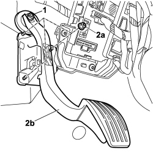

1068A15 ACCELERATOR PEDAL WITH BUILT-IN POTENTIOMETER - R R
- Path
- Procedures > 10 ENGINE UNIT > 1068 ACCELERATOR CONTROLS > 1068A ACCELERATOR PEDAL CONTROL > 1068A15 ACCELERATOR PEDAL WITH BUILT-IN POTENTIOMETER - R R
- Kind
- repair procedure (removal / refitting; the operation number is the code)
- Applies to
- engines: 1.2 8v; all production periods; only with equipment: Right hand drive
- Interactive page
- https://sloeber94.github.io/elrnDB-fPnd/en/#/169002373
Applies to: engines: 1.2 8v; all production periods; only with equipment: Right hand drive
 Removing
Removing
 Refitting
Refitting1. Release the accelerator cable from the pedal.
2. Unscrew nuts (2a) and remove accelerator pedal (2b) from the passenger compartment.

Applies to: engines: 1.2 8v; all production periods; only with equipment: Right hand drive
Refitting
RemovingPosition the accelerator pedal in the vehicle compartment and tighten the nuts to the body.
Secure the accelerator pedal by inserting it into its seat on the pedal.